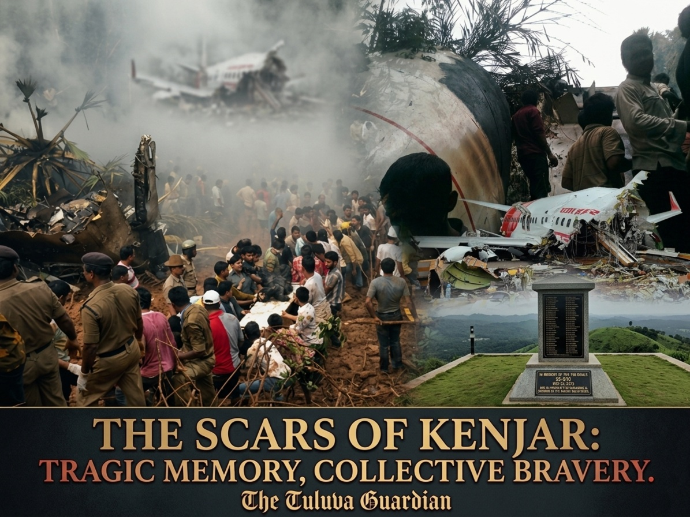

The tragedy fundamentally altered aviation security conversations surrounding tabletop runways worldwide. Yet, beneath the technical investigation reports and black box analyses lies a deeply human story of collective grief and unmatched regional heroism. The immediate response to the catastrophe highlighted the profound social bond and raw courage that defines the people of the coastal belt.
"Long before official emergency protocols swung into gear or fire tenders could navigate the treacherous terrain, it was the local villagers, auto-drivers, and youth of Kenjar and Adyapady who ran straight toward the burning debris, tearing through smoke with bare hands to pull out the eight survivors."
The Courage in the Ravine
When the aircraft shattered at the base of the valley, the explosion rattled homes across the surrounding villages. Defying instinct, the local community did not flee from the thick, toxic smoke. Dozens of local youth, plantation workers, and passing motorists rushed down the rugged, vertical slopes of Kenjar.
Without gas masks, fire-retardant suits, or medical training, these ordinary citizens acted as the frontline vanguard of humanity. They carried survivors up the steep hills on their backs, guided ambulances through narrow mud tracks, and stood shoulder-to-shoulder with emergency services throughout the grueling recovery operation. Their heroism on that morning prevented the survival count from dropping to zero.
A Bond Beyond Borders
The 2010 air crash also underscored the deep, structural connection between Tulu Nadu and the Gulf region. Nearly every household along our coast has a direct link to the Middle East, with thousands of our youth working across Dubai, Abu Dhabi, Muscat, and Bahrain to support families back home. Flight 812 was filled with those exact dreams—ordinary citizens returning for school vacations, family weddings, or long-awaited reunions. The loss was felt intimately in every village from Mangaluru and Udupi to Kasaragod.
As we look back on this solemn memory, *The Tuluva Guardian* pays its deepest respects to the departed souls and salutes the unyielding spirit of the community members who rose as shields in our darkest hour. Kenjar's hills will always bear the weight of that morning, but they also stand as a monument to the absolute bravery of our people.